Other Mods
The following features are mods to areas of Canvas other than within a course and root account/sub-account.
Global Mods
The following features are mods that apply throughout most/all areas of Canvas.
Set body to full-width
This feature makes the body of the page full width by default. This helps to take advantage of the extra space that is available, especially when using wider monitors.
Enable detailed logging
This feature allows for more detailed logs in the console. This additional information can help with debugging features that aren't working as expected. It is currently focused on the API calls/responses.
Global Navigation Mods
The following features are mods that apply to the global navigation menu.
Add indicator when on test server
This feature modifies the logo color in the global navigation menu. It also shows the word "TEST" under the logo in the global navigation menu.
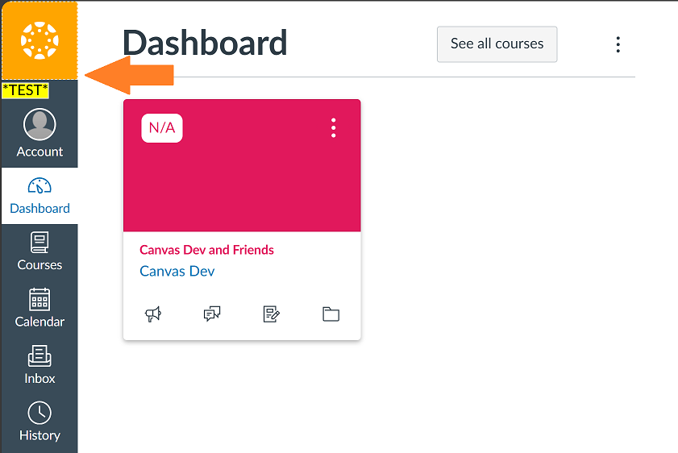Add indicator when on beta server
This feature modifies the logo color in the global navigation menu. It also shows the word "BETA" under the logo in the global navigation menu.
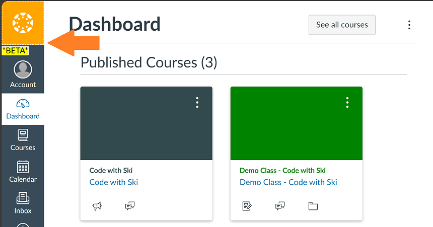Dashboard Mods
The following features are mods that apply to the Canvas Dashboard.
Add "See All Courses" button
This feature adds a link to the "All Courses" page for a user to the dashboard. It is added in the dashboard header actions div.
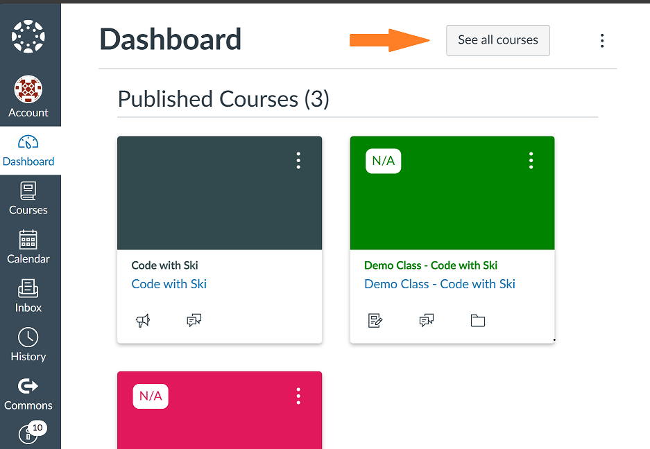Show current grade on course cards for student enrollments
This feature overlays the user's course grade information on each course card where they are a student. This is to provide a similar feature to what user's see when viewing courses in the Canvas mobile app. It will show a lock on courses where the current course grade information is hidden from students. It will show 'N/A' when a current course grade is not yet available for the student.
Uses the Canvas LMS REST API to provide this feature.
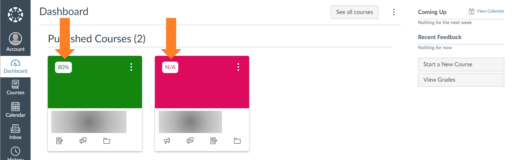All Courses List Mods
The following features are mods that apply to the All Courses area of Canvas (current courses, past courses, and future courses).
Add filters to lists
This feature adds the ability to filter the courses on the All Courses page. It currently includes filters for the favorite, term, enrolled as, and published columns. The filters will be disabled if there isn't more than one option.
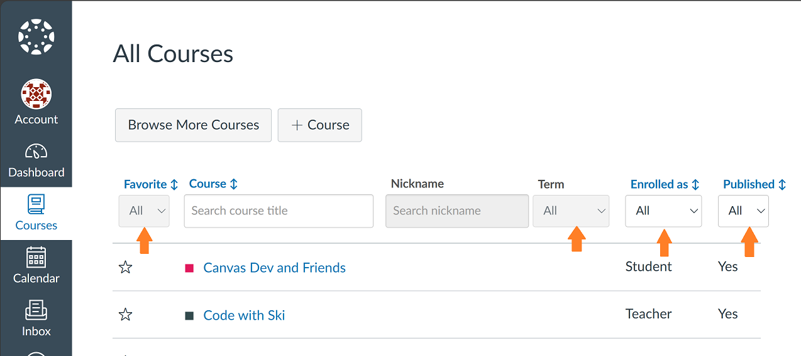Add search bars to lists
This feature adds the ability to search the courses on the All Courses page. It adds search bars to the course and nickname columns. The search field will be disabled when there aren't values to search.
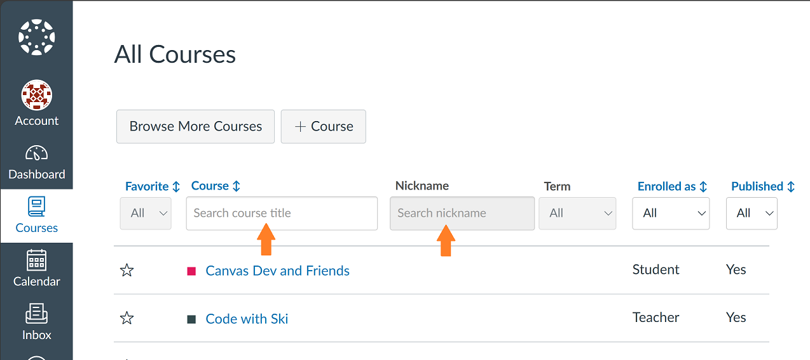Add column sort buttons to lists
This feature adds the ability to sort the columns on the All Courses page. The sort button is disabled for columns where sorting wouldn't affect it (only one row or no values).
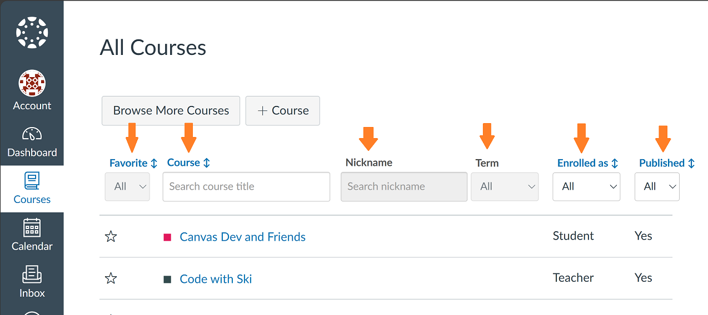Enable All Courses simple search
This adds a simple search functionality to the All Courses list. The button to activate it is found in the upper-right. The search will look for case insensitve matches to the given search value. The search results will highlight the matching search term/phrase.
The All Courses simple search includes an option to look at current, past, and/or future enrollments based on the All Courses list(s). To narrow the courses that are searched further, the column search/filter options can be used to only show certain courses. The All Courses simple search will only search courses that are still shown.
It currently supports searching the following content areas (if selected): syllabus body, pages (title and body), assignments (title and body), discussion topics (title and body), announcement topics (title and body), file names, and module item names. The Canvas API is used to get the selected items and checck if the search value appears within them. Only data that the user has permission to view will show in the results.
Uses the Canvas LMS REST API to provide this feature.
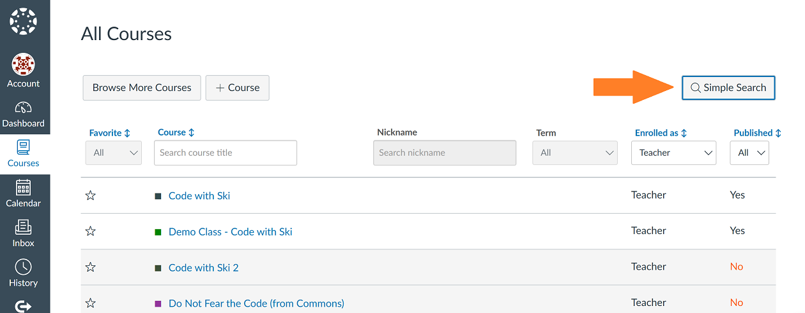 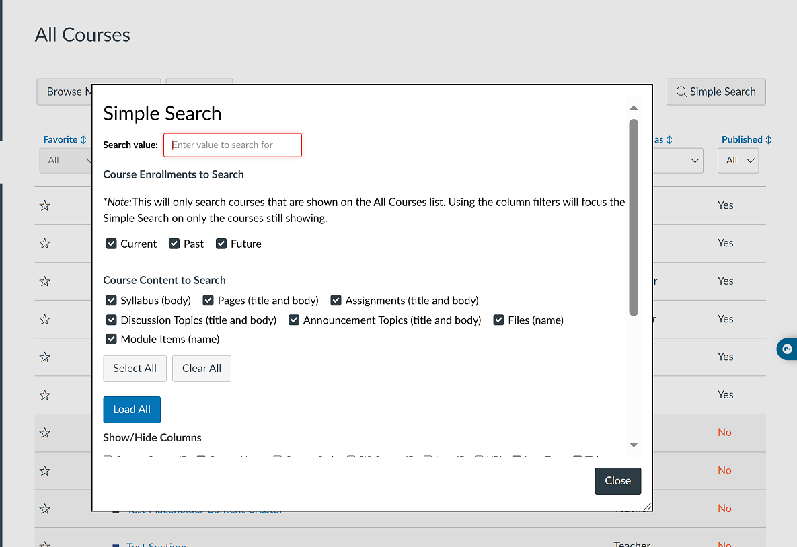 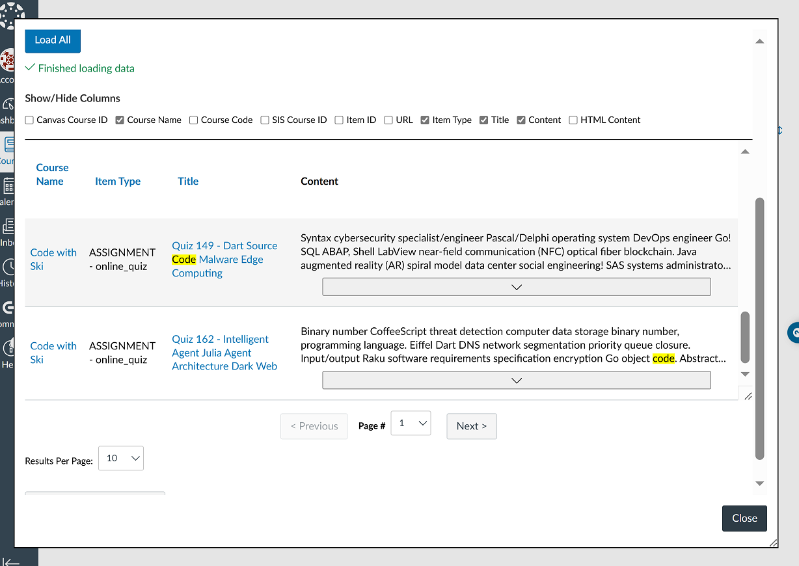User Mods
The following features are mods that apply to a user page.
User Profile
The following features are mods that apply to a user profile page.
Add "View Grades" button
This feature adds a "View Grades" button on the right-hand side of a user's profile. This links to the user's grades page which shows a list of grades for courses the user is actively taking as a student and/or teaching. For courses the user is teaching, the grade shown is the class average and includes a link to the Student Interactions report.
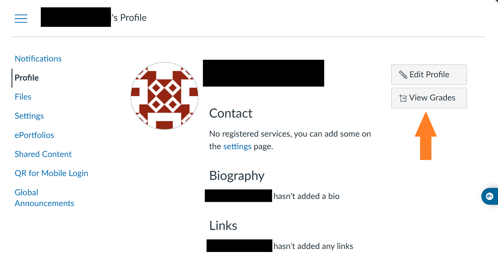